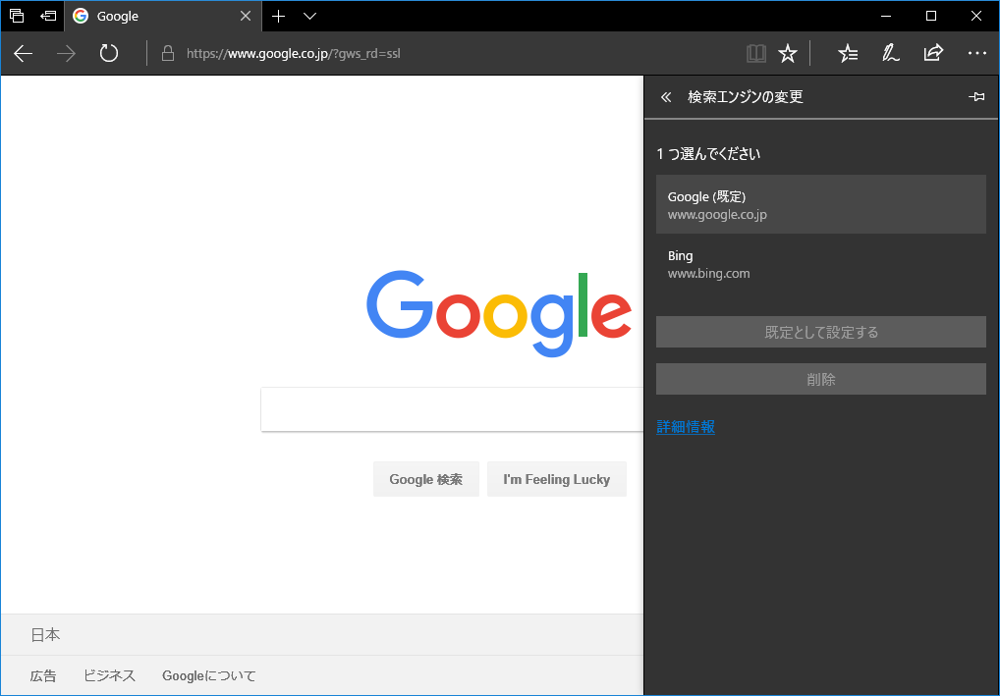

Edge ブラウザの検索エンジンに Google を追加する方法
Edge ブラウザのデフォルトの検索エンジンは Bing で、これ以外の検索エンジンの導入方法が分からなかったので調べた。
「Google (google.co.jp)」のトップページを開いた状態で、「設定」→「詳細設定を表示」→「検索エンジンの変更」と進むと、「Google」が検索プロバイダの候補に登場しているので、コレを既定に設定したりすれば良い。

Bing は消せないので放置。とりあえずコレで Google 検索が気軽に使えるようになった。